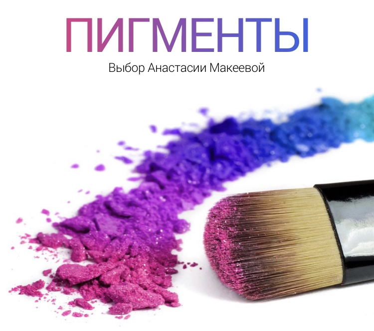

На сегодняшний день пигменты находятся на пике популярности. Их применение одинаково актуально как в коммерческих, свадебных вариантах, так и в более ярких, креативных. Матовые и перламутровые, крупные и мелкие, нежные и яркие, на косметическом рынке пигментов великое множество, на любой вкус и кошелек. За последнее время было создано несколько частных марок, которые занимаются исключительно производством заветной пыльцы, вот о них мы и поговорим.